Quantization
for production
Storage, kernels, quality and the decision to ship.

Quantization trades representation error and kernel constraints for capacity. Whether that trade is good depends on the workload.
A rollout that seemed obvious
Illustrative production incidentPlan
- 3B weights: BF16 → 4-bit
- Expect lower VRAM
- Spend headroom on more live requests
Observed
- First-token latency rises
- Some JSON answers break
- “4-bit” says nothing about the kernel path
The same literal request reaches both candidates
Recorded 2 October 2026 · natural-EOS quality sample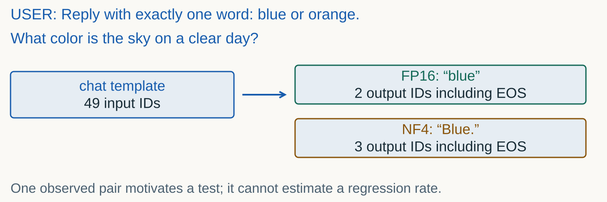
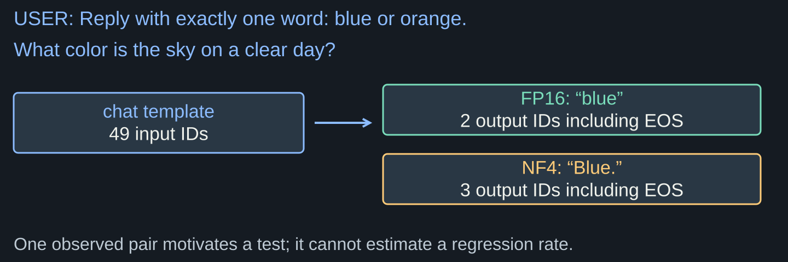
The measured candidate has an exact identity
Current run · 2 October 2026| Field | Pinned observation |
|---|---|
| Model | Qwen2.5-0.5B-Instruct @ 7ae5576… |
| GPU / framework | RTX 5070 Ti; Torch 2.14.0+cu130 |
| Transformers / quantizer | 4.51.3 / bitsandbytes 0.50.2 |
| Quality + timing | 4 prompts + 12 fixed-24-token trials per format |
A format is not a deployment decision
Four independent axes| Axis | Question | Evidence |
|---|---|---|
| Fit | Weights + KV + runtime? | peak and reserved bytes |
| Speed | Which phase improves? | TTFT, TPOT, goodput |
| Quality | Which tasks regress? | paired prompt outcomes |
| Operability | Supported kernel and rollback? | version, logs, profiler |
What you will be able to defend
Observable outcomesFrom number format to rollout decision
Seven turnsVisible words and selected token IDs differ
Recorded 2 October 2026 · complete color-answer ledger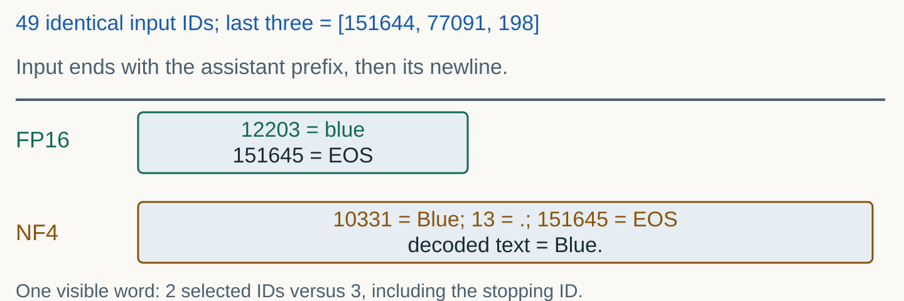
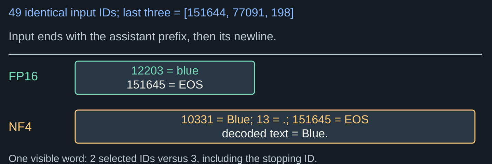
Predict before seeing the arithmetic
Pause · 60 secondsName one mechanism that reduces bytes but increases time, and one observation that would distinguish it from queueing.
Map the number
Every saved bit introduces a reconstruction rule.
FP16/BF16 and INT4 make different promises
RepresentationFloating point
Sign, exponent and fraction encode a wide dynamic range with non-uniform spacing. BF16 and FP16 both use 16 bits but distribute them differently.
Integer quantization
A limited codebook uses an explicit scale (and sometimes zero-point) to map real values into discrete codes. Spacing and clipping are chosen by calibration.
Integer codes need a reconstruction rule
Worked arithmetic · units and limitsEach scalar crosses four explicit operations
Complete CPU teaching example · invented weights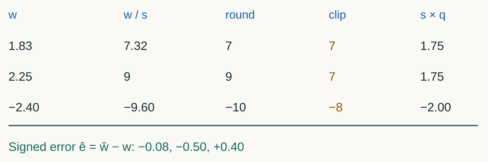
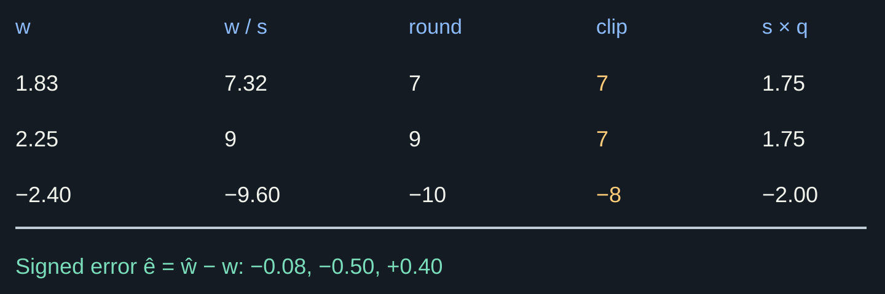
Rounding changes a value inside the code range
Worked arithmetic · units and limitsClipping loses magnitude beyond the code range
Worked arithmetic · units and limitsTies are part of the reproducibility contract
Complete CPU teaching example · invented weights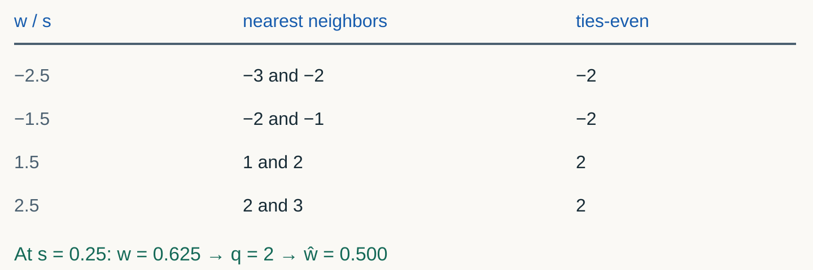
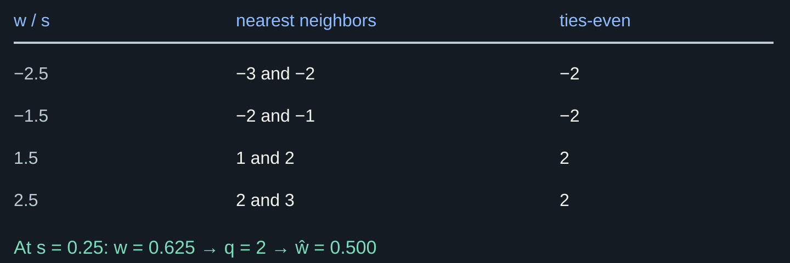
Two signed four-bit codes occupy one byte
Complete CPU teaching example · invented weights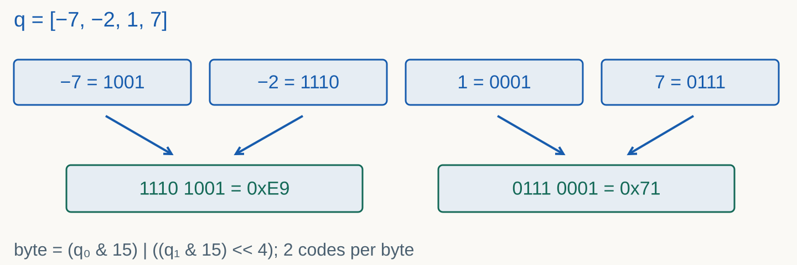
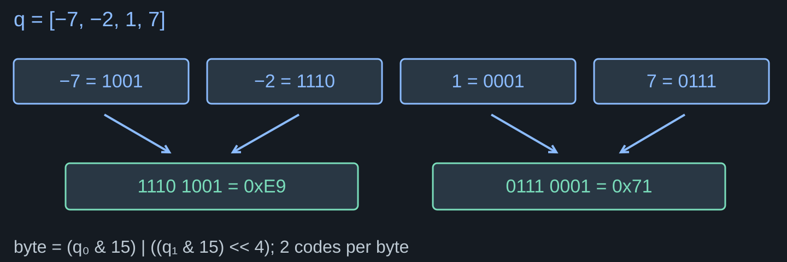
The byte is unreadable without a reconstruction rule
Complete CPU teaching example · invented weights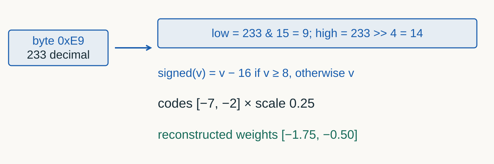
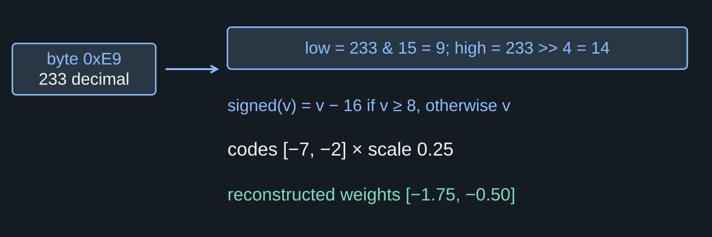
The entire tiny projection fits on the page
Complete CPU teaching example · invented weights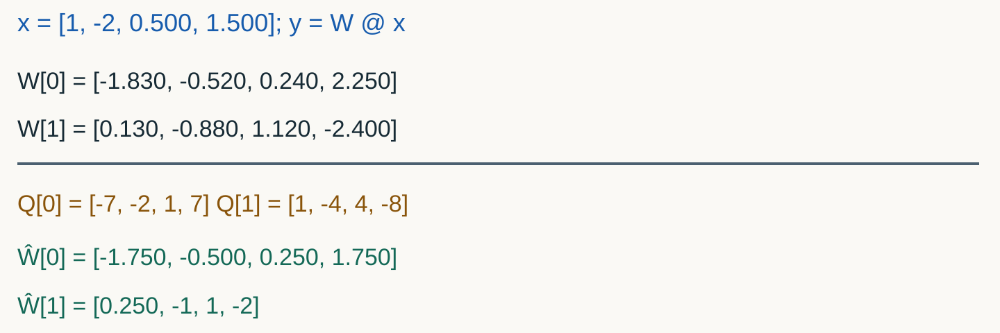
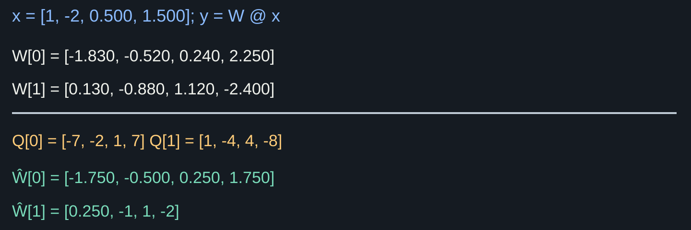
A weight error becomes an activation-weighted error
Complete CPU teaching example · invented weights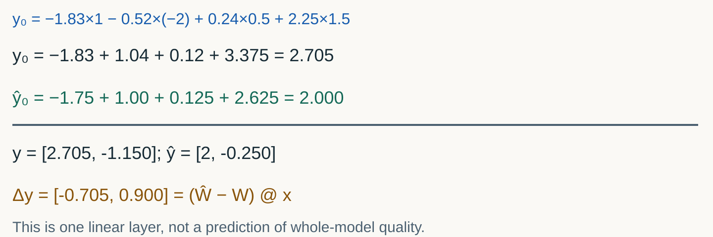
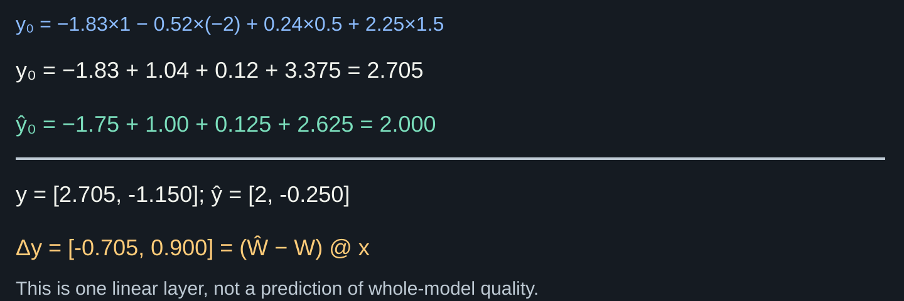
The same weights can create different output error
Complete CPU teaching example · invented weights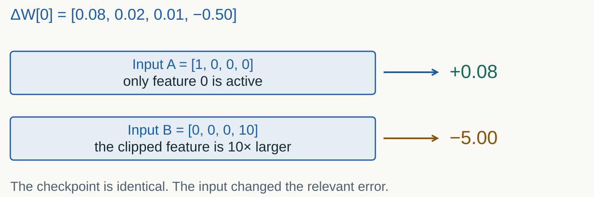
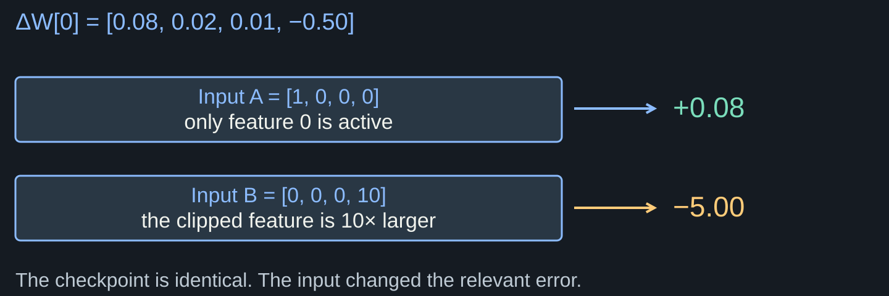
One scale is cheap; one scale can be crude
GranularityPer tensor
One mapping spans many values. Small metadata, but one outlier can expand the range for all channels.
Per channel / group
Different mappings protect local ranges. More scale metadata and layout constraints; the runtime must apply those scales in its kernels.
A distant outlier can erase a small group
Complete CPU teaching example · invented weights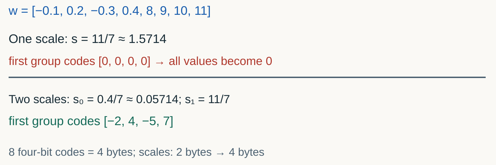
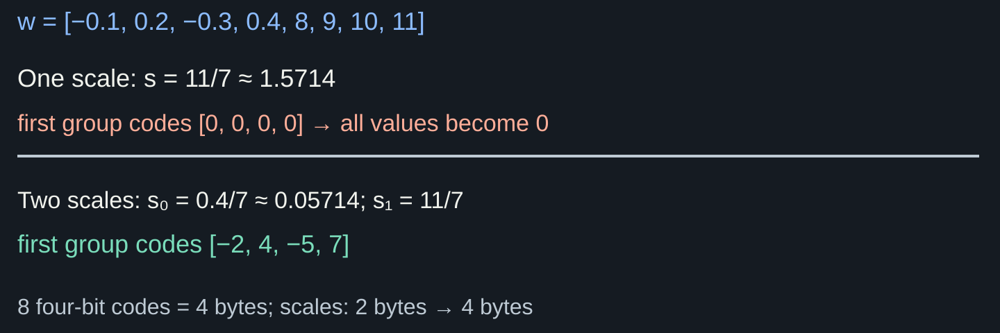
An affine zero point moves the zero code
Worked arithmetic · units and limitsMove the value across the clipping boundary
Interactive · symmetric integer toyNearest-even ties. Arrow keys move sliders. This uniform toy does not model NF4.
Calibration chooses which error to reduce
Concrete choice before a GPU runWeight-only error
Minimize average (ŵ − w)² over stored weights. A rare large value can dominate the scale.
Output error
Minimize ‖(Ŵ − W)X‖² over representative activations X. Important input channels can change the preferred scale.
“Four bits” does not mean “four times smaller”
Common shortcutPayload is only one part of a live GPU process.
Choose the next experiment
Pause · 60 secondsWould you change the scale granularity, the clipping objective, the calibration sample, or the bit width first? State a measurement that could falsify your choice.
Choose what changes
Weights, activations and KV state live on different paths.
The quantization target follows the tensor lifetime
Constructed decoder map · no performance claim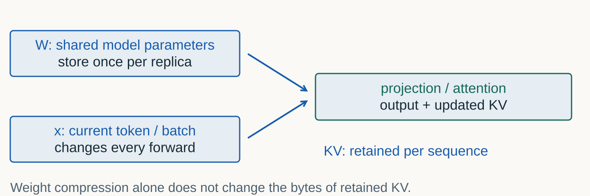
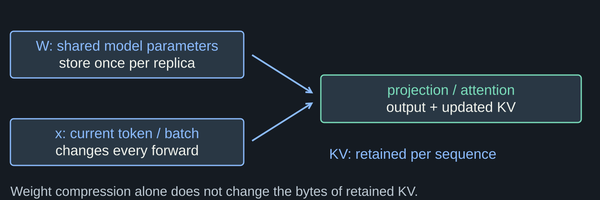
W4A16 separates storage from arithmetic
Illustrative execution path · actual kernel must be observed

Quantizing both operands changes the scale product
Constructed W8A8 dot product · zero points are zero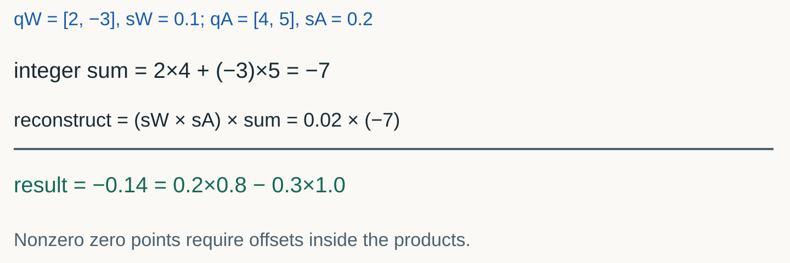
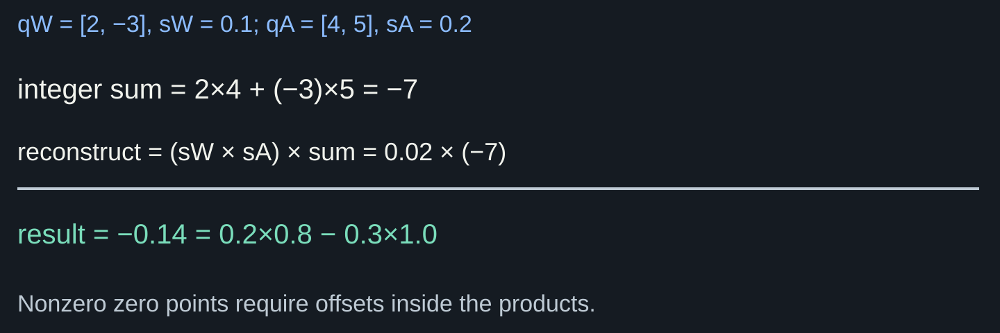
Weight precision leaves this KV term unchanged
Worked arithmetic · units and limitsKV precision has its own reconstruction cost
Illustrative 3B capacity transfer| KV element | Logical 49,152-position payload | Still to test |
|---|---|---|
| 2 bytes | 1.6875 GiB | baseline long-context quality |
| 1 byte | 0.84375 GiB | KV scales and supported attention path |
| Weight-only NF4 | KV bytes unchanged | weights and KV are independent settings |
The checkpoint and kernel must agree
Deployment compatibility| Artifact field | Failure if mismatched | Check |
|---|---|---|
| group size / scales | wrong reconstruction or load failure | checkpoint config |
| packing layout | fallback / conversion | runtime logs and profiler |
| device capability | unsupported kernel | GPU + runtime matrix |
| activation dtype | extra casts or error | model/runtime args |
Failure: “loads” does not mean “accelerates”
Production scenario ADetection
Cold load takes longer; prefill and decode timing regress. Logs show conversion; profiler shows dequantize or generic kernels instead of the expected path.
Mitigation
Pin a compatible runtime/checkpoint pair, preconvert and retest, or roll back to the known BF16 candidate. Never hide the fallback in one aggregate tokens/s number.
More token rows can reuse one weight matrix
Illustrative 1536 × 1536 projection| Input rows | Multiply-add work | Ideal weight reads |
|---|---|---|
| 1 decode row | 2 × 1536² = 4.72 MFLOP | one 4.72 MB FP16 matrix |
| 42 prefill rows | 42 × 4.72 = 198.18 MFLOP | same matrix if perfectly reused |
| 4 decode rows | 4 × 4.72 = 18.87 MFLOP | same matrix if perfectly reused |
Low-bit storage is not necessarily low-bit GEMM
Common shortcut“The GPU multiplies two 4-bit operands.”
Which bytes are limiting this service?
Pause · choose a targetWould you first test weight-only, activation or KV quantization? State the memory term each changes and one quality test that belongs in the experiment.
Count all bytes
Compressed payload is a lower bound on process memory.
Six billion weight bytes at sixteen bits
Worked arithmetic · units and limitsThe ideal code payload falls to 1.5 GB
Worked arithmetic · units and limitsEach group adds a scale
Worked arithmetic · units and limitsScale overhead grows as groups get smaller
Illustrative uniform four-bit payload with FP16 scales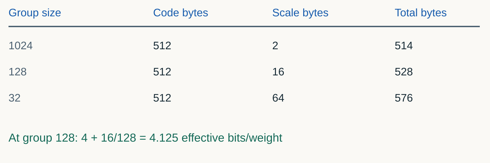
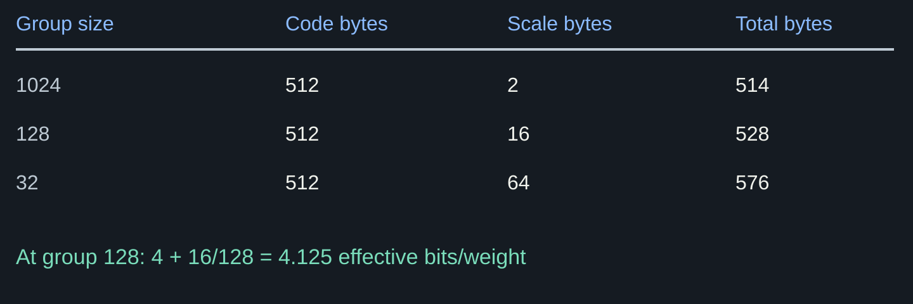
Usable capacity subtracts each live component
Worked arithmetic · units and limitsMove payload and headroom together
Interactive idealized budget · 16 GiBBelow 16 bits: codes + FP16 group scales. At 16 bits: BF16 payload, no group scales.
Units can create a false fit decision
Decimal versus binary6.0 GB is about 5.59 GiB. A 16 GiB device has about 17.18 decimal GB before any other allocation. State the unit next to every capacity number.
Which measured memory value answers which question?
PyTorch/CUDA accounting| Counter | Question | Caveat |
|---|---|---|
| allocated | live tracked tensors | not all process allocations |
| reserved | allocator pool | can exceed live tensors |
| peak | highest interval footprint | reset before comparison |
| device used | whole GPU | includes other processes |
Packing and mixed modules change a file budget
Worked accounting beyond nominal bits| Term | Explicit assumption | Bytes |
|---|---|---|
| 130 four-bit weights | raw nibble payload | 65 |
| 2 groups of 128 | pad each group to 128 values | 128 code bytes |
| 2 FP16 scales | one per padded group | 4 scale bytes |
| Total under this layout | 128 + 4 | 132, not 65 |
Fit is not “one successful load”
Operational reservePrompt lengths, batching, allocator fragmentation and runtime workspaces change peak demand. A candidate that starts with almost no free VRAM can fail at the intended concurrency.
Would you quantize this 3B model?
Pause · conditional decisionFP16 toy weights fit. Name an additional workload condition that could justify lower-bit weights, and a quality cost that could outweigh that gain.
Calibrate and deploy
Same bit width, different optimization and kernel contracts.
When is the quantizer chosen?
WorkflowPost-training quantization
Start with a trained checkpoint, choose scales/codes on calibration data, then validate held-out tasks. Usually cheaper than retraining.
Quantization-aware training
Expose the model to quantization effects during training/fine-tuning. Can recover quality but adds data, compute and training risk.
Calibration data is a design choice
RepresentativenessCode, math, structured outputs, long context and languages may activate different channels. A tiny generic sample can choose scales that look good on average but fail a critical bucket.
AWQ searches scales using activation information
Weight-only post-training method| Step | Concrete object | Decision |
|---|---|---|
| Observe | calibration input features X | which channels affect output? |
| Transform | W S and S⁻¹ X | preserve the float product |
| Search | candidate channel-scale vectors | reduce quantized output error |
| Freeze | packed weights + metadata | validate held-out tasks and kernels |
Equivalent scaling changes the quantizer’s error
Constructed local mechanism · AWQ motivation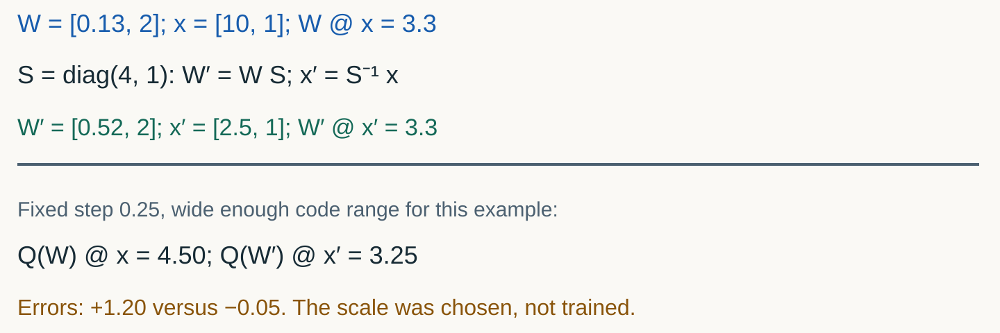
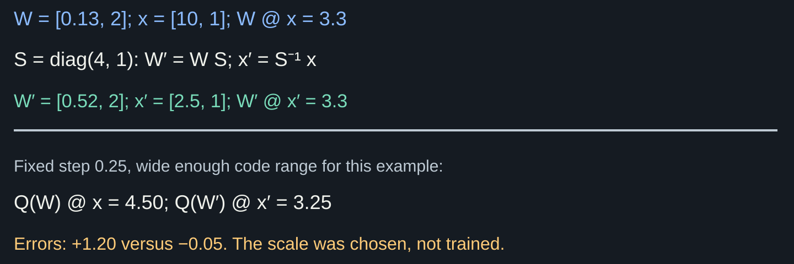
Correlated input features permit error compensation
Constructed two-weight reconstruction problem · GPTQ motivation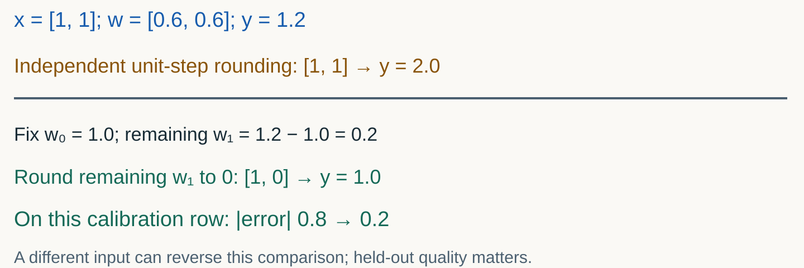
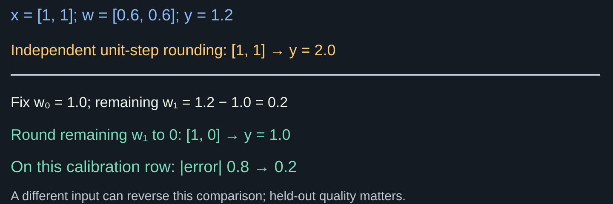
GPTQ uses calibration curvature to distribute error
Worked arithmetic · units and limitsThree “four-bit” labels answer different questions
Not interchangeable| Label | Main idea | Deployment check |
|---|---|---|
| AWQ | activation-aware weight scaling | supported packed kernel |
| GPTQ | error compensation with curvature approximation | group/layout kernel |
| NF4 (lab) | non-uniform 4-bit codebook | bitsandbytes path |
NF4 codes index unevenly spaced values
Actual bitsandbytes 0.50.2 codebook · constructed scalar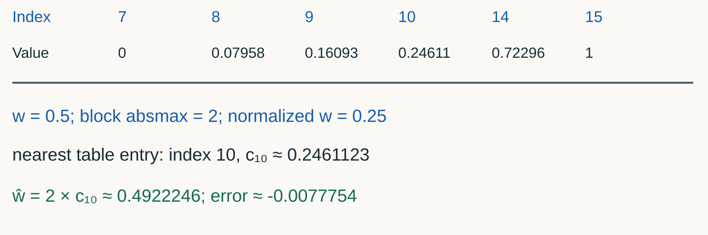
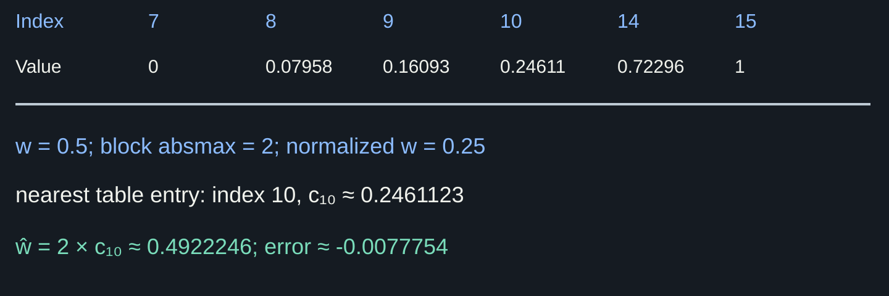
Double quantization compresses the scale state
Constructed memory ledger · QLoRA mechanism| Representation | 1024 values, groups of 64 | Metadata |
|---|---|---|
| 4-bit codes | 1024 / 2 | 512 bytes |
| FP32 absmax per group | 16 × 4 | 64 bytes |
| 8-bit scale codes | 16 × 1 | 16 bytes + second-level metadata |
| Nested reconstruction | scale code → scale → weight | adds another error source |
Equal bit width permits different numeric ranges
Format definition, not a speed result| Type | Encoding | Example distinction |
|---|---|---|
| INT8 | integer code × scale | uniform step for one scale |
| FP8 E4M3 | sign + 4 exponent + 3 fraction bits | spacing grows with exponent |
| FP8 E5M2 | sign + 5 exponent + 2 fraction bits | more exponent range, fewer fraction bits |
| NF4 | 4-bit lookup index + block scale | nonlinear table, no exponent field |
NVFP4 uses two levels of scaling
Hardware-specific scheme · verify installed runtime| Component | Role | Why it matters |
|---|---|---|
| E2M1 four-bit values | sign, exponent and fraction | different from NF4 lookup indices |
| Fine block scale | shared by 16 values in TensorRT scheme | local ranges change reconstruction |
| High-precision scale | additional tensor-level factor | not just four raw bits per value |
| Runtime/device support | implementation-dependent kernel | T4 does not imply native FP4 support |
Support tables are versioned, not eternal
Read the installed runtime| Question | Inspect | Failure signal |
|---|---|---|
| Can it load? | model config + loader | unsupported quantization error |
| Can it run optimized? | GPU capability + kernel docs | fallback/compile failure |
| Does it fit? | live memory counters | OOM at workload scale |
| Is it safe? | paired quality buckets | tail regressions |
Check the installed release against vLLM's hardware/format support; a loading format need not have a fast kernel.
A format decision needs an immutable artifact
ReproducibilityRecord model commit, tokenizer revision, quantization recipe, calibration source/version, output artifact hash, runtime and kernel options. A mutable model name cannot explain a later regression.
A paper's speedup is not your GPU's speedup
Transfer error“AWQ/GPTQ reported X×, so our server will gain X×.”
Which path can you validate this week?
Pause · choose a comparisonChoose a format with known support, specify the baseline, freeze the task set and output cap, and state the failure condition before you run it.
Test quality
Memory and speed gains are conditional on preserved service behavior.
Two experiment branches share the same prompts
Shared protocol · v2 and v3| Branch | Stopping rule | What it answers |
|---|---|---|
| Quality | natural EOS or cap 24 | what the model actually says |
| Timing | force exactly 24 selected IDs | how much this fixed work takes |
| Common control | one pinned model/tokenizer | format-plus-path comparison |
| Preserved evidence | raw outputs, counts and trials | failure and variance remain visible |
One average can hide critical failures
Task-aware evidence| Bucket | Risk | What to score |
|---|---|---|
| structured output | invalid JSON/schema | parse + constraints |
| math/code | changed exact answer | execution or exactness |
| long context | missed evidence | grounded retrieval |
| rare language | tail regression | human/validated rubric |
A six-prompt difference is three percentage points
Worked arithmetic · units and limitsEqual aggregate scores can hide different flips
Illustrative 200-prompt paired quality table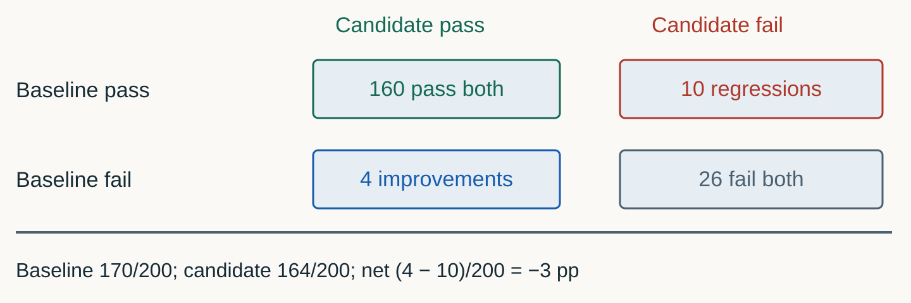
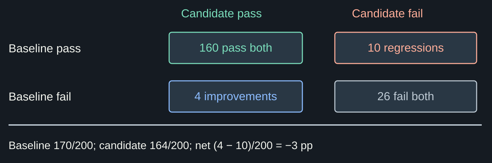
A tiny smoke set cannot certify quality
Sampling limitationThe lab can reveal a broken format, empty generation or obvious instruction failure. It cannot establish a one-point non-inferiority margin. Expand to a held-out set with task buckets and paired uncertainty before rollout.
Failure: aggregate quality hides a contract break
Production scenario BDetection
Overall success moves little, but JSON parse failures double for a key workflow. Inspect paired errors, schema validity and error severity per bucket.
Mitigation
Hold rollout, improve calibration coverage or keep sensitive modules at higher precision, then revalidate. Preserve BF16 rollback and a canary slice.
Calibration and evaluation answer different questions
Illustrative data separation · no hidden course inputs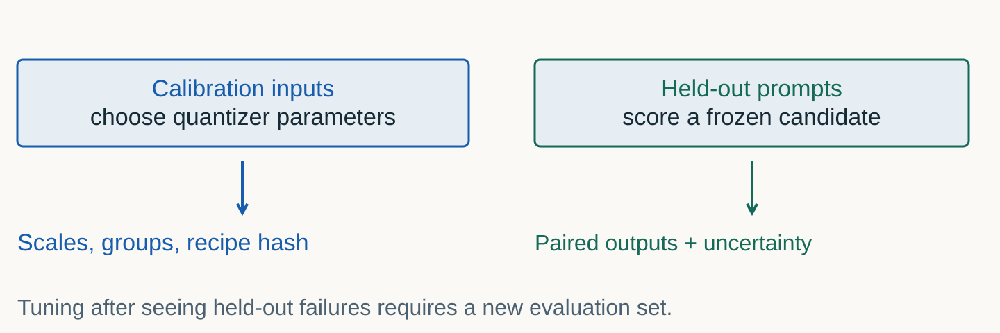
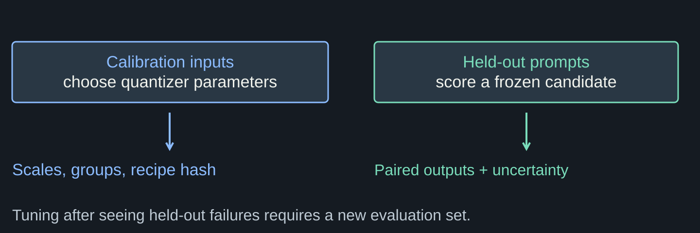
Failed generations stay in the denominator
Measurement contract| Outcome | Quality treatment | Speed treatment |
|---|---|---|
| valid complete | score task | count successful tokens |
| invalid/truncated | fail or rubric flag | do not inflate goodput |
| server error | record failure | report error rate |
| timeout | record by policy | report latency censoring |
The validator decides whether punctuation is a failure
Current exact outputs · explicit teaching score| Declared rule | FP16: blue | NF4: Blue. |
|---|---|---|
| text in {blue, orange} | pass | fail |
| Semantically names sky color | pass | pass |
| Useful inference | one strict-format warning | no population rate estimate |
The exact-three-verbs prompt fails in both paths
Recorded natural-EOS outputsPrompt
Write exactly three comma-separated verbs for measuring a service.
NF4 output
1. Serve
2. Provide
3. Offer
12 selected IDs. Numbered lines violate the comma-separated contract.
A token cap can prevent a completed quality answer
Recorded capacity prompt · both formats hit 24Literal prompt
A server has 2 GiB free and a new request needs 3 GiB. In one sentence, say whether it fits and why.
NF4 prefix
It does not fit because the server has 2 GiB of free space, which is insufficient to accommodate the requested
What would stop the rollout?
Pause · pre-register a gateWould you block on any malformed JSON, a specified regression margin, or a low-confidence uncertainty interval? State the rule before examining candidate results.
Test speed
A compressed candidate may move the bottleneck rather than remove it.
Do not collapse four clocks into one number
Phase-specific comparison| Metric | Boundary | Why it can regress |
|---|---|---|
| cold load | start → ready | conversion and I/O |
| TTFT | send → first content | prefill / queue / host |
| TPOT | post-first cadence | decode kernel / KV |
| goodput | successful output / wall | errors, invalid answers |
A traffic bound requires an effective bandwidth
Worked arithmetic · units and limitsLower traffic competes with added conversion work
Worked arithmetic · units and limitsSaved traffic must exceed added work
Illustrative serial transfer-plus-overhead model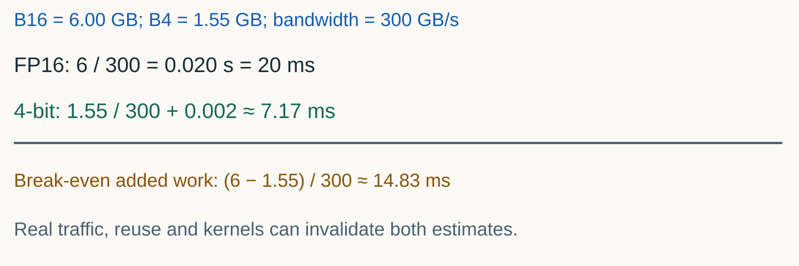
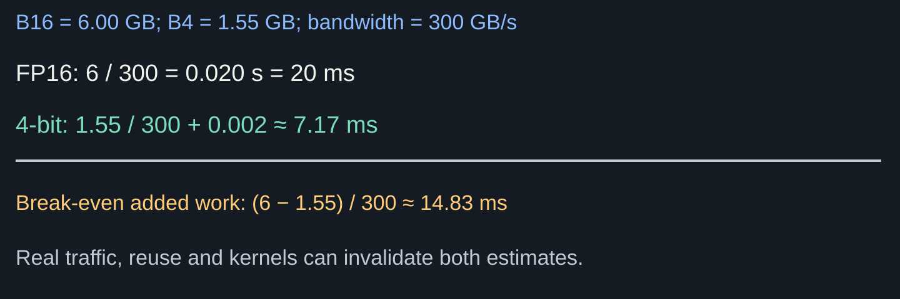
Keep the speed comparison paired too
ControlsHold fixed
GPU, base revision, tokenizer, prompts, output cap, decoding, warm-up, API path, concurrency and trial count.
Record
Raw per-request times, successful token counts, p50/p95 scope, error rate, allocated/reserved VRAM and actual kernel/runtime versions.
Choose the fastest feasible candidate
Interactive · hypothetical classroom dataQuality and performance figures here are invented for a decision exercise—not a GPU run.
The smallest model is not always the production point
Constrained Pareto choiceApply quality, p95 latency, error and memory-headroom gates before ranking successful-output goodput or cost. A candidate outside a hard gate is not rescued by its throughput.
Lower allocated bytes did not lower reserved bytes
Measured 2 October 2026 · same 0.5B GPU smoke

The raw trials show what “p95” means here
Measured format prompt · 24 output tokens in each timing trial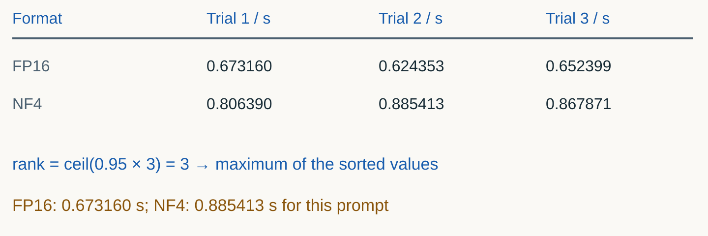
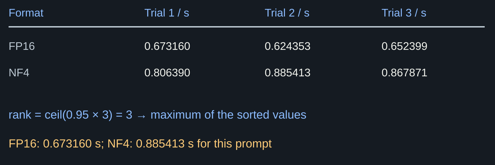
The repeated smoke changes a simple speed ranking
Recorded 2 October 2026 · inspect prompt-level trialsColor prompt maxima
FP16 0.673160 s; NF4 0.885413 s. NF4 is slower on this fixed-work probe.
Arithmetic prompt maxima
FP16 0.821955 s; NF4 0.771735 s. The ordering reverses on this probe.
Ship or stop
The quantizer is a release candidate, not a property of a checkpoint name.
The current evidence supports a bounded hold
2 October 2026 · exact 0.5B candidate| Gate | Observation | Decision |
|---|---|---|
| Execution | both formats complete the smoke | compatibility smoke passes |
| Memory | allocated ↓47.34%; reserved ↑0.03125 GiB | no demonstrated API capacity gain |
| Quality | blue versus Blue.; four paired prompts | strict-format risk, no rate estimate |
| Speed | prompt-level fixed-work ordering differs | no stable general speed winner |
Lab: one snapshot, two separate loads
Bounded smoke comparisonPrefetch immutable Qwen2.5-0.5B once into a persistent local cache. Run each candidate alone, warm it, then compare the same four prompts and 24-token cap over three trials.
Save raw evidence before writing a conclusion
Student deliverables| Artifact | Must contain |
|---|---|
| comparison JSON | device, revision, versions, raw trials, tokens, outputs, memory |
| decision memo | hand budget, paired annotations, surprising result, go/no-go |
| follow-up experiment | one alternative cause and how to distinguish it |
Verify format behavior at the source
Primary readingMake a conditional production decision
Exit ticketState the target workload, one measured gain, one quality or latency risk, and the missing evidence that could overturn your answer.

The winning candidate is the one that fits, runs on this hardware, preserves required quality and meets the user-facing SLO.
Now serve the candidate.
Pin its identity. Start one vLLM process. Ask what the client actually sees at /v1/models, chat, and the streaming boundary.